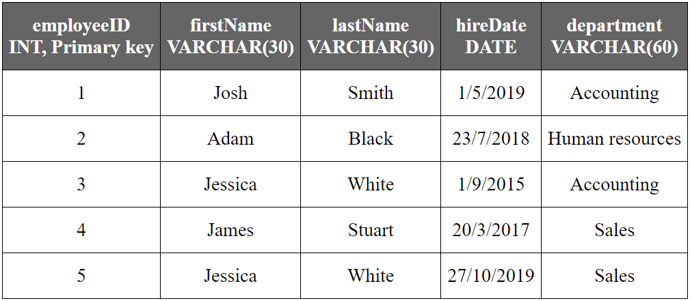

A database is build from tables. A database without tables is useless, not only there is no data, but there is no place to put data in. This is a tutorial chapter, which means that you'll touch a lot of subjects on the surface and not deep enough, to avoid confusion, just assume that this is more like a guided tour of the basics, I don't expect that you understand everything on this chapter, but I hope to give you a wide view of what the job asks from you. And for you to see what the database business is about.
I'm using MariaDB as the database engine, some of these examples may differ depending on the database engine or the version. The source code on this book should work the same in MySQl, most of the exercises are done in standard SQL which means that you can use the source code as is, in standard SQL database engines.
The installation of a specific database engine is outside the scope of this book, however here is a YouTube video that I recorded with installation instructions to install MariaDB on Windows 10. You don't have to open that link on your eReader but you are welcome to try.
YouTube: How to install MariaDB on Windows 10.There are plenty of tutorial and videos on whatever database engine you decide to use. This book is written as a guide for SQL databases and most examples are done using standard SQL in order to allow you to use this knowledge on whatever database engine you use.
I'm assuming that you already installed a database engine and that you can actually run queries on it.
Before creating a table and making queries, you need to create an actual database. For this chapter, we are creating a database for a human resources department. Most of the time, you'll receive a document called technical requirements this document may say something like this:
"The company requires to store information about it's employees and departments. We need to store their names, hire dates and the department they belong to..."
During this first chapter you'll learn what most programmers know, regarding database design and modeling. The good news is that after reading this, you are pretty much in line with what most people already know about databases, the bad news is that this knowledge is incomplete and leads to a painful path. Believe it or not, this is what most people work with:
To create a database you need to run this command on the database engine:
CREATE DATABASE human_resources;
You can replace "human_resources" with whatever database name you want. The naming conventions I use are snake_case where all words are lower cased and I use underscore instead of spaces. I don't type "human_resources_database" because it's implied that all databases are just that, databases. So I don't need to write the word database on every database I create.
If recommend that you save these commands into a text file for easy replication. Text files with SQL queries are called scripts. You can name your scripts with the SQL extension to allow your file system to locate the recommended software to use in order to open these files.
Example SQL script names:
Whatever naming conventions you use, just remember to be consistent.
If you try to execute the same command again, the database engine may tell you that there was an Error: The human_resources database already exists.
While learning, it's common that you'll need to recreate your databases from scratch or create them using a SQL script file. In order to delete (drop) the human_resources database and create it anew, use this command:
CREATE OR REPLACE DATABASE human_resources;
This command will create the "human_resources" database, if it already exist, it will delete it and create a new one without any tables or data.
The database you just created is empty, there is no data and there is no place to put the data into. In order to put data into a database we need to create tables, inside that database. Before doing anything else, we need to open the database in order to execute more queries (instructions for the database engine to execute).
To open the "human_resources" database, execute this command:
USE human_resources;
Now you can execute queries upon the "human_resources" database. Next we need to create a place to put data into, let's create a table.
If we recall the requirements for this database, we get this:
"The company requires to store information about it's employees and departments. We need to store their names, hire dates and the department they belong to..."
With so little information be sure that whatever design you do at this time, it's going to get changed in the future, don't feel mad or frustrated, that's just how it is. But we are going to be working to get to the best version of the database as soon as possible.
The first thing to identify is the actual requirements to meet. After reading the requirements you can see that the database should be able to store these data:
A word that we read here a lot in there it's employee. So It's natural that our table name is just that: "employee", I name tables in singular not plural and I use the camelCase, naming convention. That means that the first letter of the name is lower case and instead of space, I join all the words and make a separation using a upper case letter, for example: firstName, employeeNorthOffice, employeeSalary, etc.
Our table's name it's "employee"
Next we need to add fields to insert our data into, my first proposal would be these fields:
Simple. Yet in the case of people's names, it's often required to store them in two fields: first name and last name, this allows you to search employees by last name or first name, also allows you to order these records using last names, quite useful on a lot of circumstances. So the proposed table fields would end like this:
Fields on a table must be declared of a certain data type, on databases, data types are used to impose rules and restrictions on the data to be stored. Depending of the type of data to be stored, you should chose a field data type.
For example, for the firstName and lastName fields we may use varchar data type, this is the data type used for text data, for the hireDate we may use a date data type. Notice that in the case of varchar, we may need to define how many characters are we allowed to store on that single field. Here is a list of the data types that we are going to use on this table on MariaDB:
For a detailed list of the data types supported by MariaDB visit: Data Types - MariaDB Knowledge Base
If you are using another database engine, please look for your database documentation on the Internet.
In our case, our employee table would have these fields:
So were does INTEGER come into play? We missed an important field that does not come defined in the technical requirements, that's the concept of the primary key. A primary key, also called a primary keyword, is a key in a relational database that is unique for each record. This value helps identifying a single record as unique on the entire table. In our case, we will create a primary key of type INTEGER. Since this field is artificial, which means that it's not part of the actual data required.
So we create a field called employeeID this field will store an INTEGER number and it will be auto incremented field, this means that the number it's introduced by the database engine itself in order to avoid duplication and ensure the value it's unique for the entire table.
So we end up with this list of fields for the employee table:
To visualize the employee table, we may represent it like a spreadsheet:
| employeeID INT, Primary key |
firstName VARCHAR(30) |
lastName VARCHAR(30) |
hireDate DATE |
department VARCHAR(60) |
|---|---|---|---|---|
| 1 | Josh | Smith | 1/5/2019 | Accounting |
| 2 | Adam | Black | 23/7/2018 | Human resources |
| 3 | Jessica | White | 1/9/2015 | Accounting |
| 4 | James | Stuart | 20/3/2017 | Sales |
| 5 | Jessica | White | 27/10/2019 | Sales |
So after all, it's time to actually code the table in SQL. Let's see the command to create the employee table then examine it to understand the details.
CREATE OR REPLACE TABLE employee (
employeeID INTEGER NOT NULL AUTO_INCREMENT,
firstName VARCHAR(30),
lastName VARCHAR(30),
hireDate DATE,
department VARCHAR(60),
CONSTRAINT employee_pk PRIMARY KEY (employeeID));
Now that's a mouthful. Lets divide and conquer this query by focusing on the first line:
CREATE OR REPLACE TABLE employee (
-- Code elided for clarity...
Similar to CREATE OR REPLACE DATABASE, we create the employee table and if it already exists, we replace it with a new version of it.
WARNING: Be careful, this will delete the entire table and all it's data.
Next we create the actual fields of the employee table, the first and more important is the primary key we define it like this:
CREATE OR REPLACE TABLE employee (
employeeID INTEGER NOT NULL AUTO_INCREMENT,
-- Code elided for clarity...
The second line creates the employeeID field, the INTEGER keyword means that the field it's an integer number, NOT NULL means that this field may never be empty (NULL) when inserting or updating a record, it must always have a valid value, AUTO_INCREMENT means that if there is no value set for the new record or during and update for the record, the database engine will provide a valid auto numeric value to the field. This means that you just don't need to add a value to this field during an insert or update operation, the database engine already knows what to do. We'll see this in action on the next section.
CREATE OR REPLACE TABLE employee (
employeeID INTEGER NOT NULL AUTO_INCREMENT,
firstName VARCHAR(30),
lastName VARCHAR(30),
hireDate DATE,
department VARCHAR(60),
-- Code elided for clarity...
In a similar fashion, we add the fields that are actually required: firstName, lastName, hireDate and department. These fields have their data types defined after their names, remember to follow these field declarations with a coma (,) in order to separate the fields from one another and avoid execution errors.
CREATE OR REPLACE TABLE employee (
employeeID INTEGER NOT NULL AUTO_INCREMENT,
-- Code elided for clarity...
CONSTRAINT employee_pk PRIMARY KEY (employeeID));
Finally the last line defines the CONSTRAINT for the primary key. All primary keys are indexed, this means that a space in the database is dedicated to store not just the primary key itself, but the actual record in a index table that allows the database to locate an specific record quickly using the employeeID field as reference. We'll take a deep look at indexes in the future.
The employee_pk keyword stands for "employee primary key" this is a unique name for this specific index in the entire database.
The PRIMARY KEY (employeeID)); code is used to select which field is to be taken into consideration as the primary key, in this case that's employeeID. This must be considered as part of the primary key, just as the field definition on line two.
Finally we review the code for creating the employee table.
CREATE OR REPLACE TABLE employee (
employeeID INTEGER NOT NULL AUTO_INCREMENT,
firstName VARCHAR(30),
lastName VARCHAR(30),
hireDate DATE,
department VARCHAR(60),
CONSTRAINT employee_pk PRIMARY KEY (employeeID));
Note that there is no data on the employee table yet, we only created an empty table to be able to store the data into. Next we'll populate our table with actual data.
This was the hard part, create the database, then create a table. Working with data is 90% of the job, and it's the easiest part of the job. Most database administrators don't spend their time designing and modeling databases, these were created long ago most of the time and you just need to focus on getting data from the database and presenting information in a meaningful manner.
Now that you have the where to put data into, let's just do that. Data is inserted in the employee table in a record.
A record in a database is an object that can contain one more values. Groups of records are then saved in a table; the table defines the data that each record may contain. In a given database, there are multiple tables, each containing multiple records. Think of the rows and columns of a typical spreadsheet.1
Lets insert a new employee:
The employee table have these fields:
So the data for those fields should be these:
To insert Jessica White as a new employee at the employee table, execute this command:
INSERT INTO employee VALUES (NULL, 'Jessica', 'White', '2019-04-01', 'Accounting');
This is the syntax to insert a new record when you already know the order of the fields on the employee table. If you read the values between the parenthesis, you'll realize that those values are in a proper order.
The NULL keyword means that on the first field (employeeID) is not going to insert any value or it's unknown, the database engine will pick the next unused value from the AUTO_INCREMENT property and use that value instead of an actual NULL. Don't insert an actual value there unless you know what you are doing, just let the database engine do it's job.
Sometimes you don't have all the values or some of the record's values are unknown, in this case we use the NULL keyword in order to tell the database engine that we don't know that value for the record.
For example, assume we want to insert another employee, but this time we don't know what department he is going to be working for. So the department field is unknown. In this case we use this command:
INSERT INTO employee VALUES (NULL, 'Walter', 'Jones', '2017-08-13', NULL);
In the future, you'll create fields that have the property NOT NULL like the primary key, if a field is marked as NOT NULL, then you either insert the value yourself or the database engine may do so via AUTO_INCREMENT or by DEFAULT value.
DEFAULT values, in the context of databases, are preset values defined for a column type. Default values are used when many records hold similar data.2